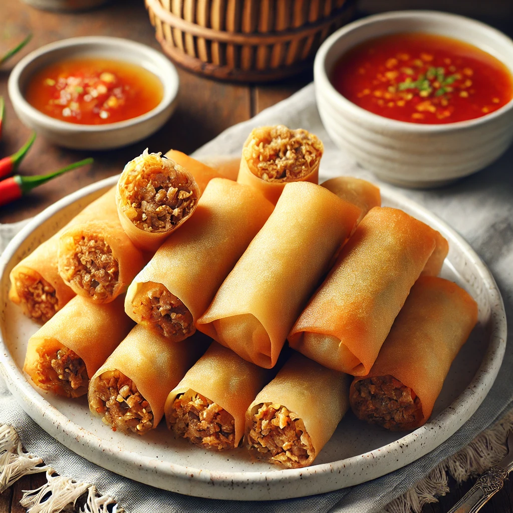
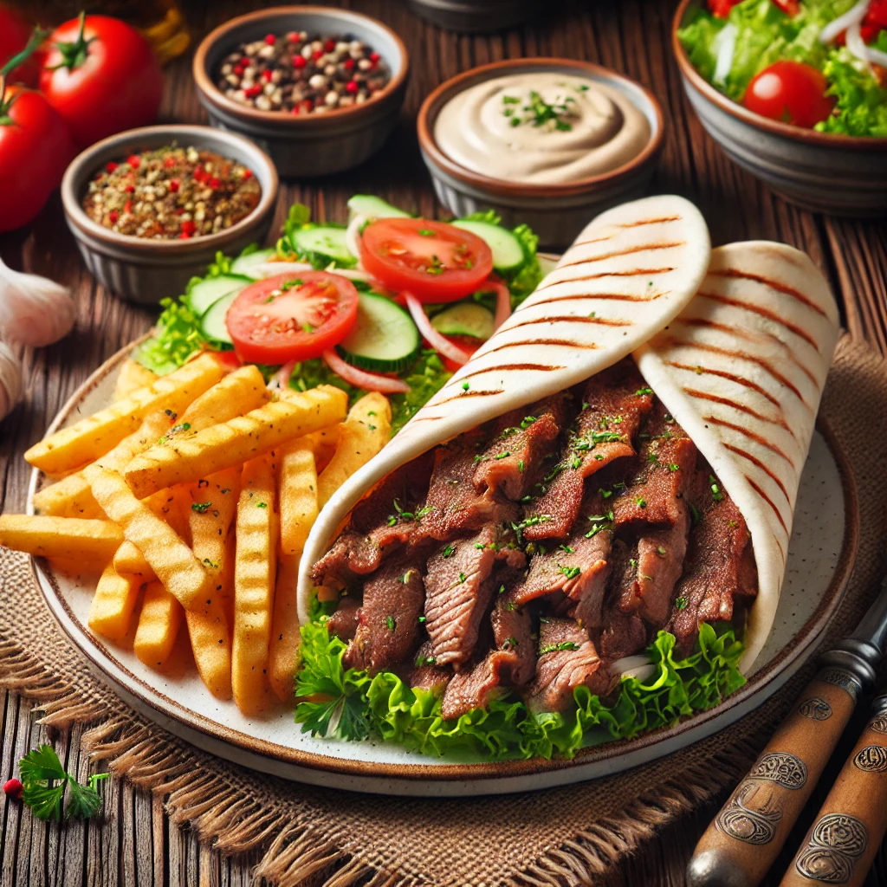
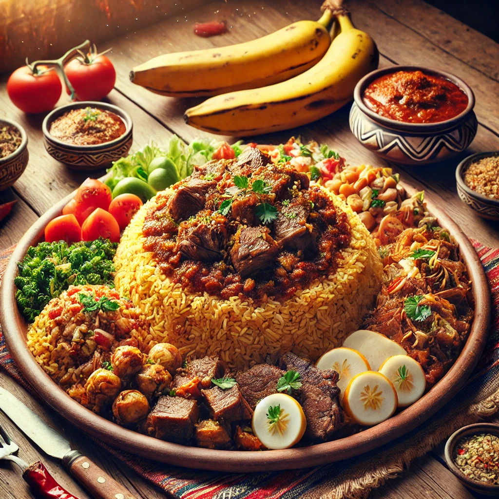
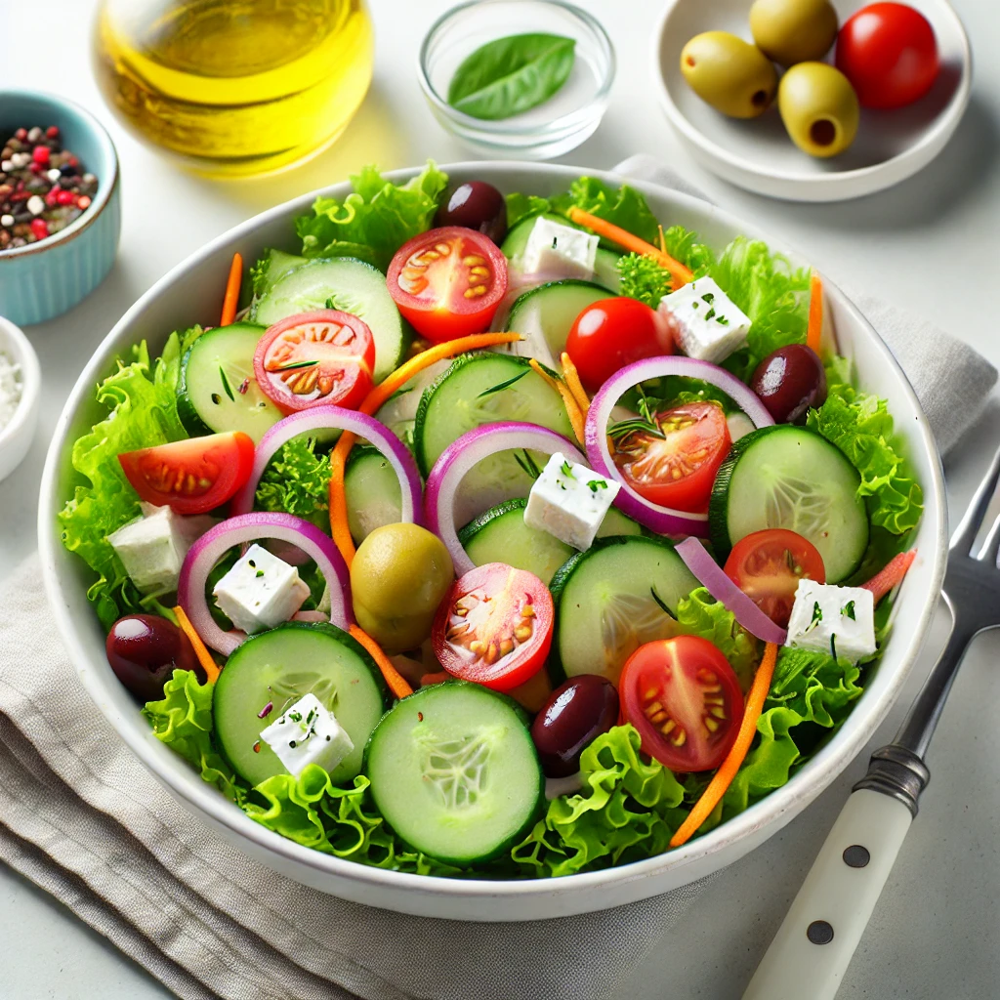

Bestel
Aantal
Lumpia (Filipijnse Loempia's)
Knapperige, goudbruine loempia's gevuld met gekruid gehakt en groenten, geserveerd met zoete chilisaus.
Ingrediënten:- Loempiavellen (tarwebloem)
- Gehakt (kip/varken/rund)
- Wortel, kool, ui
- Eieren
- Zoete chilisaus
Bestel
Aantal

Bestel
Aantal
Shoarma Schotel
Een smaakvolle schotel met gegrilde, gekruide shoarma geserveerd met warme pita, knoflooksaus, frisse salade en knapperige frietjes.
Ingrediënten:- Shoarma (kip, rund of lam)
- Pita brood
- Knoflooksaus (yoghurt, knoflook, mayonaise)
- Tomaat, komkommer, sla
- Frietjes
Bestel
Aantal

Bestel
Aantal
Somalische Bariis met Vlees
Traditioneel Somalisch gerecht met geurige, gekruide rijst (bariis) en langzaam gegaard vlees, geserveerd met banaan, salade en pittige basbaas-saus.
Ingrediënten:- Basmati rijst
- Geiten- of rundvlees
- Banaan
- Tomaat, ui, komkommer
- Basbaas (chili saus)
Bestel
Aantal

Bestel
Aantal
Frisse Mediterrane Salade
Een lichte en gezonde salade met knapperige groenten, feta kaas en olijven, besprenkeld met een frisse vinaigrette.
Ingrediënten:- Sla (ijsbergsla of romaine)
- Cherry tomaten
- Komkommer
- Rode ui
- Wortel
- Feta kaas
- Olijven
- Vinaigrette dressing (olijfolie, azijn, mosterd)
Bestel
Aantal